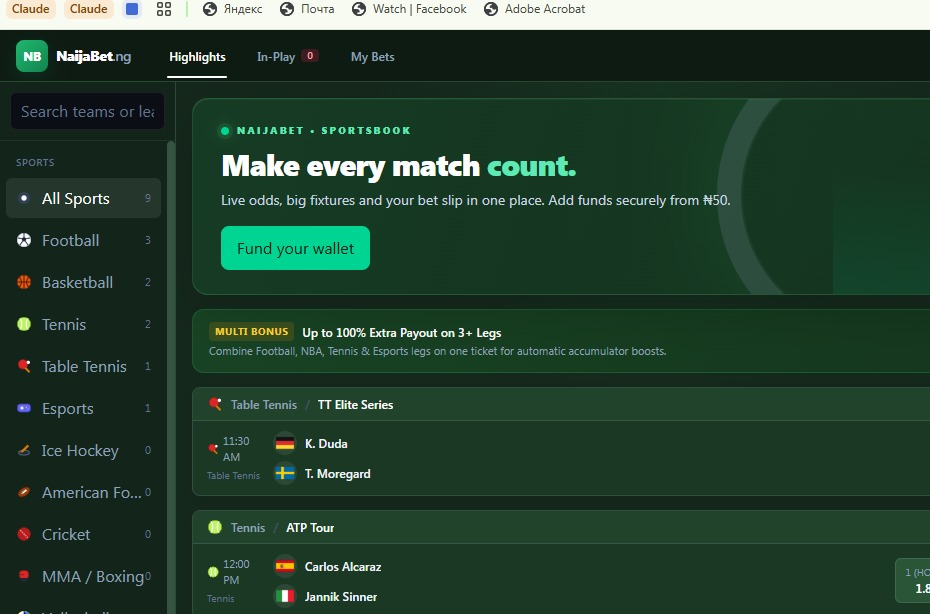
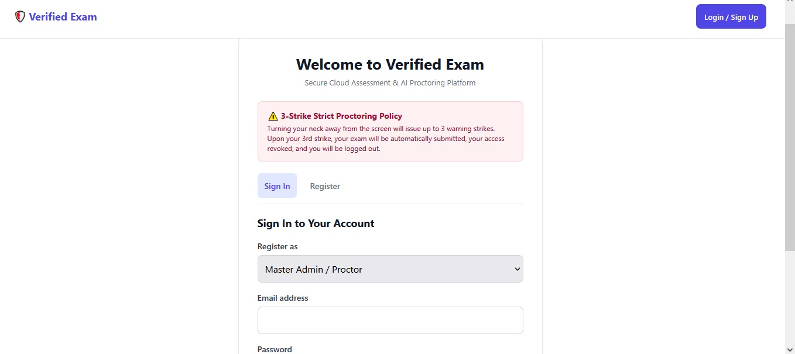

Full-Stack Development
Building responsive web applications, secure APIs, authentication flows, and connected data systems.
HELLO, I’M
Full-Stack & Applied AI Developer
I build web applications, backend systems, and practical AI integrations that solve real problems.
I’m a full-stack and applied AI developer who enjoys turning ideas into useful software. I work across backend APIs, frontend experiences, data workflows, and AI integrations. I’m currently studying Computer Science at Miva Open University and growing my skills by building real projects.
Building responsive web applications, secure APIs, authentication flows, and connected data systems.
Integrating LLMs and asynchronous monitoring workflows into products with clear, useful outcomes.
Python · FastAPI · Node.js · React · TypeScript · Pydantic · SQL · NoSQL · Git · Vercel
A couple of products where I’m putting full-stack engineering and applied AI into practice.

A sportsbook web application with secure authentication, cloud database integration, and API pipelines for live sports metrics and odds.

A secure exam platform with posture detection, camera and microphone telemetry, role-based access, and automated anomaly flagging.
Both projects are ongoing. Product previews are illustrative; they are not live application screenshots.
Computer Science
CS101 Introduction to Programming I 82%
CS402 Computer Networks 86.54%